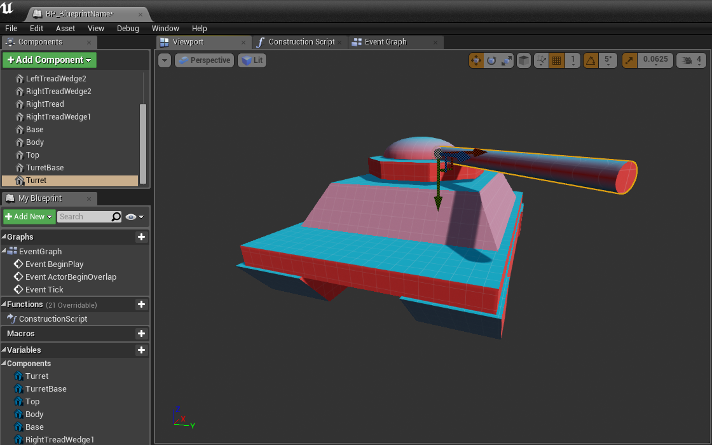
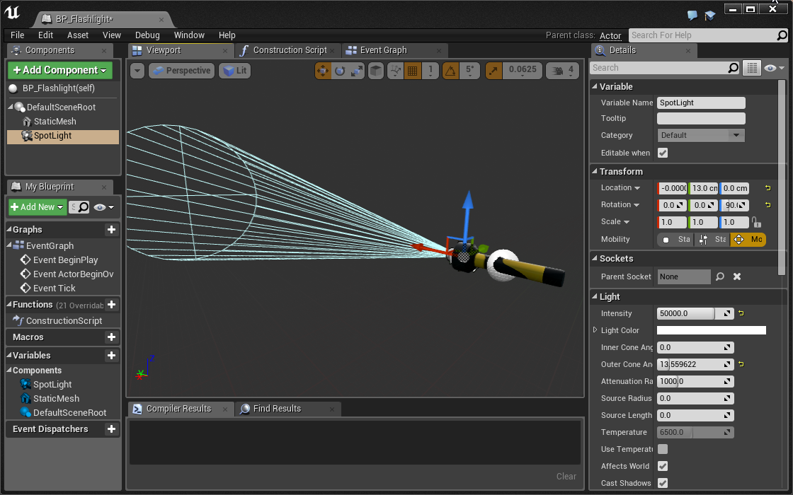

Lesson 2 - Blueprinting
Download the Starter Project
Layout uses one Master Starter Project. If you’ve downloaded it recently, chances are you don’t need to re-download it.
This tutorial requires that you’ve downloaded the starter project as of 4/5/16:
- Click here to download the Layout Master starter project.
- Extract the zip folder.
- Open up the Layout_ToyBoxx.uproject and begin your adventure!
In our previous lesson, we learned how to place and manipulate static Actors in a level. We also had the chance to experience our creations in virtual reality. In this lesson, we will build new actors with behavior that we define.
To do this, we’re going to work inside the Blueprint visual programming environment. All later lessons in this turorial series will depend on your familiarity with Blueprint, so we hope you take time to internalize the scripting strategies we encounter here.
If you’re working through this material in a lab setting, please take note that this lesson is significantly longer than the last one. Be prepared to save your work and return to the tutorial at another time.
Creating a New Level
Let’s recreate the level we used last week to better understand all the components of a good starter map.
- Open the Lessons folder
- Right-click in your Content Browser to open the Add New menu
- Create a folder named Lesson2 and open it
- Right-click in your Content Browser to open the Add New menu
- Select Level from the Create Basic Asset section of the menu
- Name your new level
- Double click your new level to open it
Setting the Default Map
We want our new level to be the default level for this project. When a packaged project is launched outside the editor, the default level will automatically open.
- Open Settings > Project Settings… in the Toolbar
- Select the Maps & Modes submenu in the sidebar
- Select your new level for Game Default Map and Editor Startup Map
Adding a Sky Sphere
There are a number of different ways we can create the illusion of a sky in UE4. For this project, we’re going to use a very large spherical mesh, commonly refered to as a sky sphere. The starter project has an actor called BP_Simple_Sky_Sphere that will do the trick.
- Drag and drop Blueprints > Sky > BP_Simple_Sky_Sphere into the world
- Place it at location [0, 0, 0]
To change the BP_Simple_Sky_Sphere color gradient:
- Click on BP_Simple_Sky_Sphere in the Viewport or World Outliner
- In the details panel, click on Top Color or Bottom Color. From the Color Picker menu, we can set a new color for the corresponding variable.
- We can also change the transition from Bottom Color to Top Color by setting the value of Horizon Transition.
Adding Light
If we place actors in our level now, they won’t be visible because we haven’t created a light source. We can simulate light from the sun with a Directional Light. You might remember from our first lesson that a directional light is uniform, acting as if it were infinitely far away from the objects it illuminates.
- Search for “directional light” in the modes panel
- Drag a Directional Light into the scene
- Place it at location [0, 0, 100]
- Build the lighting using the Build button in the top toolbar
The location of a directional light does not affect how actors are lit. We usually keep directional lights near the world origin for convenience.
We can improve the quality of light in the level with a Sky Light. A sky light captures ambient lighting information from distant parts of the level for more realistic shading. A sky light can create better shadow quality without a significant performance cost.
- Search for “sky light” in the modes panel.
- Drag a Sky Light into the scene.
- Place it at location [0, 0, 150].
- Build the level.
Creating a Landscape
Let’s create a simple ground on which we can place other objects.
- Drag and drop Meshes > Architecture > Building Blocks > Shapes > Shape_Plane into the world
- Place it at location [0, 0, 0]
- Set the scale to [250.0, 250.0, 1.0]
Adding a Post Process Volume
We can tweak the look and feel of a level with post process effects. In virtual reality, there are a number of effects common to monoscopic experiences that are too expensive and/or inappropriate for stereoscopic rendering. We can control these settings with the Post Process Volume, which allow us to manipulate effects in the bounds of the volume.
- Search for “post process volume” in the modes panel
- Drag a Post Process Volume into the scene
- Place it at location [0, 0, 0]
- Set the scale to [30.0, 30.0, 30.0]
Let’s set a few rendering parameters important for any VR experience:
- Click on PostProcessVolume in the Viewport or World Outliner
- In the details panel, expand Settings from the Post Process Volume category
- Expand Lens Flares and check Intensity. Set the value to 0.
- Lens Flares make no sense in VR.
- Expand Auto Exposure and check Min Brightness and Max Brightness. Set both values to 1.0.
- We’re turning this off because our eyes handle this naturally in VR.
- Expand Motion Blur and check Amount. Set the value to 0.
- Any motion blur that would make sense will be produced by our eyes/brain in VR. John Carmack’s tweet says it best: “Don’t use motion blur in VR.”
- Expand Misc and check AA Method. Set the value to TemporalAA.
- AA stands for Anti-Aliasing. A search on Google Images quickly demonstrates what anti-aliasing does.
There are many effects available to you by default in Unreal Engine, and you should feel free to play with them however you like.
Just be aware that each comes with performance implications and concerns specific to virtual reality. Check out the UE4 documentation to learn more about them.
Adding a Light Mass Importance Volume
We can better optimize level lighting with the Lightmass Importance Volume. A lightmass importance volume allows the computer to focus high quality lighting efforts on a smaller part of the level.
- Search for “lightmass importance volume” in the modes panel.
- Drag a Lightmass Importance Volume into the scene.
- Place it at location [0, 0, 0]
- Set the scale to [32.0, 32.0, 32.0]
Setting the Game Mode
GameMode defines how an experience is played. Put another way, we can enforce rules about the player’s relationship to the level with a custom game mode. There are many components to a game mode, but for now we’ll use a game mode we’ve provided.
- Select Settings > World Settings in the Level Editor’s Toolbar
- A new World Settings tab just opened up next to your Details panel
- Find the GameMode Override variable in the Game Mode category
- Select StationaryGameMode from the drop down menu
- Play the level
You’ll notice that the viewer is not able to move using the keyboard. You might also notice that the viewer can’t rotate with the mouse while in VR. This is an intentional input limitation to avoid discomfort. Why are we imposing this constraint on the viewer?
The vestibular system of the inner ear helps the brain interpret acceleration and orientation. When the player moves virtually, the vestibular system will not recognize the change in position. The dissonance between visual and vestibular perception will often lead to simulation sickness. In later lessons we’ll work out some alternative movement solutions, but for now our player will remain seated.
OK, we’re all set with a basic level! Now we’re ready to create our first blueprint.
Your First Blueprint
Let’s create a simple blueprint class made up of basic shapes. We’ll arrange the shapes into a vehicle of your own design.
- Open the Lessons > Lesson2 folder
- Right-click in the Content Browser
- Select Blueprint Class from the Create Basic Asset section of the menu.
- Select Actor in the popup menu.
- Name your blueprint “BP_Vehicle”. (We use the prefix ‘BP_’ to make it easy to discern that this asset is a blueprint)
What is a Blueprint Class?
To recap our previous lesson, an actor is something that we can place in the world. A blueprint is a type of actor. Inside a blueprint we will be able to define how a type of actor looks and behaves.
Let’s take a look inside.
- Double click your new blueprint to open up the Blueprint Editor.
You’ll be greeted by an empty Viewport and a number of other panels. There’s a lot to learn here, but we’ll take on the editor one piece at a time.
Adding Visual Components
Blueprints are made up of components. Some of these components are visual, like a static mesh; and some are behavioral, like a movement component. You’ll learn more about behavioral components later.
Let’s add a few Static Mesh components to make our vehicle look like a vehicle.
- Click Add Component in the Components panel in the upper left.
- Select Static Mesh under common.
An empty static mesh component has been added to the blueprint. While the new Static Mesh Component is selected, you’ll see lots of options in the Details panel on the right.
- In the Details panel, click on the Static Mesh drop down and choose a basic shape asset.
- Move the static mesh component to whatever position you like.
- Repeat this process until you have created something that looks like a vehicle.`

- Once you’re done, switch back to your Level Editor and drag some BP_Vehicles into your level. As you can see, all the vehicles look like the one we made in the blueprint. This is because each actor is an instance of the blueprint class.
Intro to Visual Scripting
This BP_Vehicle looks talkative, and I bet yours does too. Let’s hear what the vehicles have to say by displaying a message from each when we play the level.
To create this behavior we’ll use UE4’s visual scripting language, Blueprint. Instead of text, UE4’s code looks like a flow chart:
- In the Blueprint Editor, open the Event Graph tab next to the Viewport tab. This is where you’ll write all your code.
Scripting works by responding to events. For example, we can be notified when a vehicle is created. Once that event fires, let’s script the vehicle to say something.
The event we’re looking for is called Event BeginPlay. Fortunately for us, it’s already there in the Event Graph.
- Click and drag from the empty pin on the BeginPlay event node.
It should look like you’re dragging a wire from the node. When you release your mouse, a Context Sensitive menu will pop up. This menu contains all the possible nodes you can place. Placing a node is like writing a line of code.
- Type Print String and press enter.
You just placed a Print String node. The string printed by default is “Hello”. But can you hear that? It sounds like your vehicle has something else it wants to say.
- Write down your BP_Vehicle’s message.
Programmers call text a String because text is a string of characters.
- Press Play and you’ll see the text print to the upper left of your screen.
For every BP_Vehicle in your world, you’ll see a new line of text. That is, if you have 3 BP_Vehicle actors placed in the world, you’ll see 3 lines of text.
Why?
The important concept to grasp is that when you’re writing code inside of a blueprint, you’re not writing code for one actor, you’re writing code for all actors of that type. Therefore, if you have 3 BP_Vehicle actors in your world, each one has the instruction to print its message at the start of the game.
Congratulations, you just wrote your first bit of code in UE4!
Print String is extremely useful for debugging. You’ll learn to use it all the time. The problem with Print String is that you won’t be able to see it when in VR. This is because the text is printed right to the screen rather than in 3D space, making it nearly impossible to read (like reading a book a centimeter from your face). Instead, lets print the string in 3D space using a Layout utility node called Draw VR Debug String.
- Select the Print String node and press the Delete key.
- Right-click anywhere in the node graph and place a Draw VR Debug String node.
- Change the String, Duration, and Color inputs on the new node as you see fit.
The Location input requires a little thought. We want to print the string directly above the vehicle, not at [0, 0, 0]. That means we need to get the vehicle’s location, then add some space in the Z direction. The vector math looks like:
Click here for an intro to vector math if this doesn’t make sense.
- To get the vehicle’s location, place a node called Get Actor Location.
- To add two vectors, place the Vector + Vector node.
- Connect Get Actor LocationVector + Vector
- Type in [0, 0, 200] into the other Vector + Vector input
- Connect Vector + VectorVR Debug String > Location
Remember, right-click anywhere in the Event Graph to place a new node.
Nice! Go ahead and try it out, this time in VR.
Make sure to use Print String whenever you need to quickly test your code in the Engine Viewport. If you need to test while wearing a VR headset, use the Draw VR Debug String to draw it in 3D space!
Make an Animated Treasure Chest
In this little blueprint, we’ll make a chest’s lid open and close over time.
- Create a new blueprint and name it BP_Animated_Chest.
- Open the viewport panel of the new blueprint and add a static mesh component.
- Name it “ChestBottom”
- Set Static Mesh to SM_Chest_A_Btm.
- Set Location to [0, 0, 0]
We have a chest bottom, let’s add a top.
- Add a new static mesh component.
- Name it “ChestLid”
- Set Static Mesh to SM_Chest_A_Top.
- Set Location to [0, -60, 67].
OK, our treasure chest is ready to get moving. We want to change the rotation of the lid slightly every frame to create the illusion of movement. To do this, we’ll use Event Tick.
Event Tick fires every frame and is the perfect tool for this task.
Being the technical savvy person that you are, you’ve probably heard of the term Frames Per Second, or FPS. This refers to the number of still images that are displayed on your screen per second. Your brain does the rest to make these still images look like their subjects are actually moving. Classic film is shown at 24 frames per second.
In VR, we need to run at least 75 FPS on the Oculus DK2 and 90 FPS on the Oculus CV1 and HTC Vive. Anything lower than the specified frame rate will cause the viewer to feel simulation sickness.
- Open the Event Graph and add an Event Tick node if not already present.
- Click and drag the ChestLid component into the graph.
This adds a ChestLid reference to the graph, allowing us to use it in our script.
- Drag a wire out of ChestLid and add a SetRelativeRotation node
- Connect Event TickSetRelativeRotation
The goal is to animate the lid’s Roll Rotation back and forth between 0 to -90 degrees. There are a lot of great ways to do this in UE4, but we’re going to first do this with a math function based on time.
Here’s what the math looks like:
Let’s script it in the blueprint:
- Right-click in the node graph and place a Get Game Time in Seconds node.
- Get Game Time in SecondsSIN (Radians)
- SIN (Radians)Float * Float (-45)
- Float * FloatFloat - Float (45)
Now we need to plug this into the Roll of the new SetRelativeRotation > New Rotation:
- Place a Make Rotator node
- Float - FloatMake Rotator > Roll
- Make RotatorSetRelativeRotation > New Rotation
Whew! Hopefully that math wasn’t too intense, but fortunately that type of math won’t be required too often.
- Place a BP_Animated_Chest in your world
- Press Play
- Enjoy
Make a Popping Balloon
Next up! We’re going to make a very delicate balloon that pops when it touches other actors in the level.
- Create a new blueprint and name it BP_Popping_Balloon
- Open the viewport panel of the new blueprint and add a static mesh component
- Set Static Mesh to SM_Balloon_A.
- Add a BP_Popping_Balloon to the level
What are balloons really good at doing besides popping? Floating up! Let’s build that functionality now.
Moving The Balloon
We’re going to animate the balloon moving upward in the same way we animated the chest opening and closing, using Event Tick.
- Add an Event Tick node to the Event Graph if it is not already there.
Now we want to slightly move the balloon each frame. We can easily do this with the Add Actor World Offset node. Go ahead and give it a shot!
Challenge:
Make your BP_Balloon continuously move in the z direction using Event Tick and Add Actor World Offset.
Make sure to check the Sweep option on the Add Actor World Offset node. Hover over the “Sweep” text to read what it does. We will need this to detect collision later on.
Up, up, and away!!!
Computers will run your experience at different frame rates, which means that the way we currently have the BP_Balloon moving is not ideal. This is because some computers may fire Tick twice as often, meaning our balloons would move twice as fast. We can avoid this problem by utilizing the Delta Seconds output on the Tick event. Delta Seconds is the time since the previous tick. If we use that in our speed calculation, we can have a uniform experience across all computers.
Assuming we want to move 75 units per second, the math for including Delta Seconds into our tick calculation is: \begin{equation} \text{Offset Distance} = \Delta\text{Seconds} \times 75\end{equation}
In order to multiply Delta Seconds by 75 we use a Float * Float node.
To simplify our first lesson, we won’t factor in Delta Seconds in this tutorial. If you’re feeling extra cool, add it in on your own as we go.
Controlling the Balloon’s Speed
Now that we have a moving balloon, it’d be nice if there was some way to control its speed. We’ll do this using a variable. If you’re not already familiar with the concept of a variable, we highly recommend you read our introduction to variables guide before continuing.
- In the Variables category of the My Blueprint panel, click the + button.
This will create a new template variable that we can change however we like.
- Name the new variable Speed
- In the details panel, set Variable Type to Float
We always need to compile the blueprint before we can set the Default Value of a new variable.
- Compile the blueprint
- Set Speed to 2
To set the rate of the balloon’s movement, we can simply multiply the direction of travel by the speed variable. Our vector math guide can refresh you on what happens when you multiply a vector by a float.
- Click and Drag the Speed variable into the graph
- Select Get from the popup menu.
We just added a reference to Speed to the event graph. Now we can use it in our script.
- To multiply a vector by a float, place the Vector * Float node.
- Set the vector value to [0, 0, 1]
- Connect SpeedB Float
- Connect Vector * FloatAddActorWorldOffset > Delta Location
When the level is played, your balloon should move twice as fast.
Popping the Balloon on Collision
Let’s pop the balloon when it collides with other objects in the level.
- In the Level Editor, position a balloon so that it is directly below another actor
The static mesh component in BP_Popping_Balloon includes a seperate collision mesh. A collision mesh allows us to determine when actors overlap one another.
- Open the event graph
- Right-click the balloon’s static mesh in the components panel.
- Select Add Event > OnComponentBeginOverlap
The OnComponentBeginOverlap event is now available in the event graph. We want to pop the balloon when it comes in contact with another actor, and we can do that using the DestoryActor node.
- OnComponentBeginOverlapDestroy Actor

You may have noticed the ActorBeginOverlap event as well. This event fires when any component on the actor experiences a collision. We use the OnComponentBeginOverlap because it is more precise and allows us to respond differently when specific components on our actor are collided with.
By default, our balloon’s collision settings don’t look for overlap events, so this event will never fire.
- Click on the Static Mesh component
- Set Collision Presets to Overlap All in the Collision section of the details panel.
Great, our balloon is all set up to overlap/collide with other actors.
- Go ahead and test it out. Does it fail?
It is very likely that the BP_Balloon will not destroy itself on overlap with the other actor. This is because the other actor does not generate overlap events by default.
- Select the other actor
- check Generate Overlap Events in the Collision category of the details panel
POP!
Visual Effects with Particle Emitters
To add a cool visual effect, lets spawn a particle emitter when the balloon pops using the Spawn Emitter at Location node.
Challenge:
When the balloon collides with another actor, spawn an explosion emitter using the Spawn Emitter at Location node and a P_NeonExplosion emitter template.
Make sure to spawn the emitter in the right location. The emitter needs to spawn at the balloon’s location. Use the Get Actor Location node.
Oooooh!
Particle Emitters are really cool and a great way to add flare to any experience. Check out the Unreal Documentation to learn more about them.
Play a Sound When Hit
Balloons are anything but silent when they pop. Let’s play a sound when our balloon explodes. The node we want to use is Play Sound at Location. See if you can set up the node yourself to play a sound when the player is hit.
Challenge:
Play a sound when the balloon collides with another actor using a Play Sound at Location node. Make sure to set Sound and Location. Don’t destroy the actor before you get a chance to play the sound!
Oh yes, that’s more like it!
Spawning Balloons
Our level should have more balloons consistently spawning and popping. Pop Pop! We could create a BP_BalloonSpawner actor, but we’re going to use this opportunity to learn about the Level Blueprint.
- In the main editor window, click the Blueprints dropdown in the upper Toolbar.
- Select Open Level Blueprint
The Level Blueprint has an event graph like we’ve seen in our other blueprints. Let’s spawn some balloons!
To repeat a task over time, we want to use a Timer. Timer runs a function every Time seconds.
- Place a Set Timer by Function Name node near the Event BeginPlay event
Event BeginPlay fires when the corresponding actor is created. In this context, the event will fire when we play the level.
- BeginPlaySet Timer by Function Name
- Set Function Name to SpawnBalloon
- Give it a Time of 3. This means a balloon will spawn every 3 seconds.
- Check the Looping option. Otherwise the timer will only run the function once.
Now we need to create the SpawnBalloon function.
Functions are a fundamental programming tool. The idea is to take a bunch of code and turn it into something that is easily reusable. In this case, we want to make a function that spawns balloons.
- In the Functions category of the My Blueprint panel, click the + button.
- Name the new function SpawnBalloon
Inside of the new function:
- Place a Spawn Actor from Class node
- Select BP_Balloon from the Spawn Actor from Classs > Class dropdown.
We need a location to spawn our balloons. Let’s add a Target Point actor to the level, then get its location as a spawn point.
- Search for “target point” in the modes panel of the Level Editor window.
- Drag a Target Point into the world.
Balloons will spawn at this location when we complete our script.
- With the target point selected, right-click in the event graph of the Level Blueprint
- Click Create a Reference to TargetPoint
- TargetPointGetActorTransform
A transform contains data for Location, Rotation, and Scale.
- GetActorTransformSpawnActor BP Balloon > Spawn Transform
Test it out! The spawner should be releasing new balloons every few seconds.
Optimizing For Performance
Our balloon spawner has introduced a performance issue! As the level plays, our world could contain thousands of uncollided balloons, each moving every single frame. Undoubtedly this will eventually cause the game to lag and slow down.
You can see this become an issue in the World Outliner. As the level goes on, the actor count in the bottom left gets larger and larger.

We need to destroy balloons after a reasonable amount of time. Using a Delay node, we can write code to run after a specified number of seconds.
Challenge:
Make all BP_Balloons self-destruct after 5 seconds.
Hint: The nodes you’ll need to use are Event BeginPlay, Delay, and Destroy Actor. Write this code in the BP_Balloon event graph.
Die balloons! Die!
We taught this way of self-destructing balloons in part to introduce you to the Delay node, but we can also explicitly set an actor’s life span this way:
- In BP_Balloon, click Class Defaults in the toolbar
- In the Details panel, set Initial Life Span to 5
We’ve done it! Floating, popping, performant balloons.
Make a Flashlight
Let’s create a flashlight that we can turn on and off from the main editor window. This type of script is special in that it uses Public Variables and the Construction Script to achieve this.
- Create a new blueprint and name it BP_Flashlight
- Open the viewport panel of the new blueprint
- Add a static mesh component at [0, 0, 0] and set the mesh to SM_Flashlight_A
- Add a Spot Light component and set it’s location and orientation to align with the flashlight’s bulb
A Spot Light emits light from a single point in a cone shape. You can change its many variables in the details panel.
- In the details panel, set Intensity to 50,000.

- Save the blueprint and add it to the level.
- Move the flashlight so that it illuminates a dark space.
Great! We have a working flashlight. With our basic components in place, we’re ready to write our script! Let’s create the script that will allow us to turn the light on and off from within the Level Editor.
- Return to the BP_Flashlight blueprint editor and select the Construction Script tab. We’ll write our script in this graph.
The Construction Script event is a special type of event that fires any as an actor is constructed; before events like Event BeginPlay fire.
- Click and drag from SpotLight in the components panel and release inside the graph.
We’ve just created a reference to SpotLight that we can use in the graph.
The easiest way to turn our flashlight “on” and “off” is by setting the visibility of the SpotLight component.
- Click and drag from the empty pin on the Spot Light reference
- Type “Set Visibility” and press enter.
- Select Compile from the toolbar at the top of the window.
You just placed a Set Visibility node. By default, the value of New Visibility is false.
Compiling BP_Flashlight will cause all BP_Flashlights in your Level Editor to be reconstructed. For this reason, the flashlight in the level just turned off.
As shown in the final product demo, we want to set be able to set this New Visibility value from the details panel. To do this, we’ll create a public variable in our blueprint.
- Return to the BP_Flashlight blueprint editor.
- In the My Blueprint panel, open the + Add New dropdown menu and select Variable
- Name the variable “On”
You should now see a new Boolean variable named “On” in the Variables category of the MyBlueprint panel.
- Compile the blueprint
- In the Default Value category of the details panel, check On to set the Boolean to be true.
The default value of a new variable cannot be set until the blueprint is compiled.
Now we have to use the variable.
- Click and Drag the On variable into the graph
- Select Get from the popup menu
- Connect OnSet Visibility > New Visibility
- Compile the blueprint. The flashlight in the level should now be on.
We’re nearly done! The only thing left to do is to make On a public variable.
- Find On in the My Blueprint panel and click the closed eye on the right.
- Compile the blueprint and select the flashlight in your level. In the details panel, you are now able to set the value of On for each flashlight in the level.
Make an Attracting Magnet
It’s clearly time to make a magnet that attracts other actors. The perfect way to end our circus of scripts.
- Create a new blueprint and name it BP_Magnet
- Open the viewport panel of the new blueprint
- Add a static mesh component at [0, 0, 0] and set the mesh to SM_Magnet_A
We need some way to determine when other actors are within the “magnetic field” of our magnet. BP_Balloon captured overlap events using the collision mesh of SM_Balloon_A. Unfortunately the collision mesh of SM_Magnet_A won’t work here. We need to define the space using a custom geometry. The engine makes that easy.
- Click Add Component in the Components panel.
- Select Box Collision under Collision.
This collision box allows us to seperate collision behavior from other aspects of the blueprint. Let’s relocate and scale the box to something reasonable.
- Set scale to [4.0, 8.0, 4.0]
- Set location at [0, 350.0, 0]
OK, this box will serve as our magnetic field. Other actors that generate overlap events should respond when inside this space.
- Open the event graph and find the Event Tick node
- Click and drag a reference to Box into the graph
Every frame, we want to get all the actors overlapping with our box.
- BoxGet Overlapping Actors
Get Overlapping Actors does just that. Now we have a list of those actors available in an array.
Programmers arrange lists of things in arrays. Arrays are commonly used to operate on collections of similar objects.
Loops iterate over arrays to execute code for each element in the array. Powerful stuff!
- Get Overlapping ActorsForEachLoop
- Event TickForEachLoop
The ForEachLoop will execute nodes following Loop Body once for every element in the array.
Array Element is a reference to the current element of the loop.
Now that we have access to every actor that is inside the “magnetic field”, we can make each one move towards our magnet. Let’s use AddActorWorldOffset to make this movement happen:
- ForEachLoop > Array ElementAddActorWorldOffset
- ForEachLoop > Loop BodyAddActorWorldOffset
We’re using AddActorWorldOffset again, but this time we need to specify a target location. Let’s create a Scene component, which is basically just a TargetPoint that defines a location we care about.
- Add a Scene component
- Set Location to [0, 120, 0]
- Name it “TargetPoint”
- Return to the event graph and drag in a reference to TargetPoint near our new script
We want to move actors in our overlap array toward the TargetPoint component over time. All we have to do is calculate the correct Delta Location for our Add Actor World Offset node. Delta Location needs to be in the direction of TargetPoint’s location.
The node we’re looking for is called Get Direction Vector. This node outputs a vector of length 1 that points from one location to another location. We need to know the direction from the current actor to the TargetPoint’s location.
- To get the Array Element’s location, use Array ElementGetActorLocation.
- To get the TargetPoint’s location, use TargetPointGetWorldLocation
Challenge:
Connect up the nodes so that our Loop makes each actor in the “magnetic field” move towards the TargetPoint.
Hmmm, this is strange:
Can you guess why the magnet is moving? Because the “magnetic field” also contains the BP_Magnet itself.
We only want to move other overlapping actors. We can check if the currrent actor is the magnet itself using a Branch.
A Branch works by checking a boolean condition and then directing the code down different paths depending on its value. You’ll notice the node has two execution outputs, one labeled True and another labeled False. This is how we can add logic to our code, executing specific code depending on certain conditions.
If you’re familiar with programming, a Branch node is an if statement.
- Place a Branch
- Drag a wire from Array Element and search for ”==”
The == node allows us to determine equivalence. In this context we will compare objects to other objects.
- ForEachLoopBranch
- Array Element==
- Self==
- ==Branch > Condition
Self is a reference to an object within its own context in many programming languages. In the context of BP_Magnet’s event graph, Self refers to a BP_Magnet instance.
Great, Branch is ready to start branching. Remember that we only want to call AddActorWorldOffset when the current Array Element does not equal self.
- Branch > FalseAddActorWorldOffset
That’s it! Your magnet will now work on all actors that have:
- Generate Overlap Events set to True
- Mobility set to Movable
Bonus Challenge:
Make the magnetized actors move 3 times faster.
Hint: Multiplying a vector by a number makes it longer. The Vector * Float node will prove useful.
Can you feel the power?!
Commenting
You might come back to this code later and not remember exactly what it does. Fortunately it’s really easy to comment your code:
- Select the nodes you want to comment
- Press C
Conclusion
We learned a lot in this lesson! Here are some of the things you got experience doing:
- Using Blueprints as a way to define the look and behavior of a type of actor.
- Scripting using UE4’s visual scripting language.
- Enriching your experience with audio and particle emitters
- Using your vector math skills to manipulate actors in 3D space.
- Reacting to actor collision.
- Using Timers to repeatedly do things.
- Using Functions to encapsulate a bunch of reusable code.
- Using public variables and the construction script to alter blueprints from the Level Editor.
- Using For Each Loops to repeat execute code over many actors.
A Note About Node Scripting
It’s helpful to understand how the node menu works when you right click inside a blueprint. UE4 calls this the Context Sensitive menu. This menu will list only those nodes available in the current blueprint context. For example, when we’re inside BP_Balloon and right-click, we are only shown nodes that can be used from within that blueprint.
The Context Sensitive menu will also open when you drag and release a new wire from an existing node. In this case, the menu will list only those nodes available in the context of that node.
Let’s say you want to change the mesh of a specific static mesh. Here are two different ways to do it:
Project 2 - Asteroid Defense
VR Scripting
In this assignment, you’ll create three levels to inspire three different responses from the viewer. Each experience should leverage the dynamic power of Blueprint. Your scripts should be sufficiently complex, but we’re most concerned that you create compelling VR.
-
Inspire the viewer to lean in for better perspective Name the level “HW_Lean”
-
Inspire the viewer to dip, dodge, duck, dive, and/or dodge Name the level “HW_Dip”
-
Inspire the user to look left/right or up/down repeatedly Name the level “HW_Left”
Getting Started
You will need to create your own levels to complete this assignment. Unfortunately, UE4 does not provide an easy way to duplicate levels. We recommend you batch-copy/paste elements from an existing level into a new one. Make sure to select StationaryGameMode in the World Settings panel for each level - we’ll incorporate movement when we learn about good ways to avoid simulation sickness.
Your first submission might have taken place in an unending horizonscape. For brownie points, consider constructing specific environments that elicit stronger reactions. Is the viewer in a long hallway? A small closet? At the top of a mountain? Don’t miss the opportunity to put your blueprints in the context of “real” worlds.